Introducción a la inteligencia de negocios (BI)¶
90 min | Última modificación: Enero 08, 2020.
Acerca de BI¶
Hablar de Business inteligence (BI), no es relativamente nuevo, los primeros conceptos surgen con la aparición de un sistema llamado “avant la lettre”. Se trató del sistema de defensa aérea de Inglaterra creado en la década de 1930 y utilizado durante la Segunda Guerra Mundial, principalmente en el año 1940.
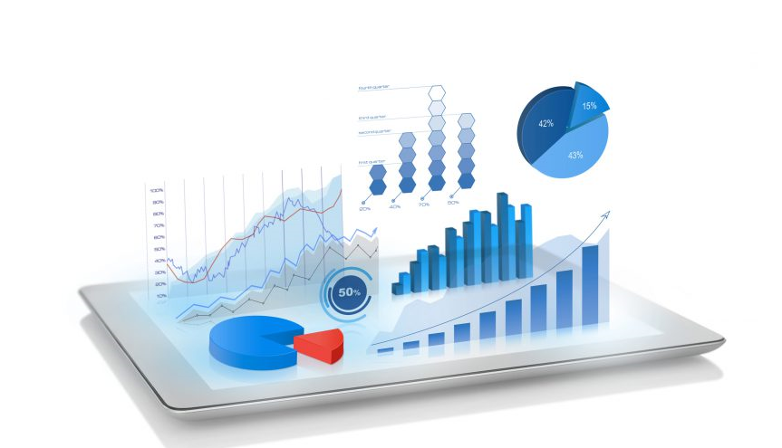
Hacia los años 60’s las empresas solo se apoyaban en los departamentos de sistemas, los cuales hacían los reportes a través de grandes computadoras centralizadas con grandes bases de datos. Con la explosión de las computadoras para los años 70´s millones de usuarios fueron adoptando el uso de estos equipos y cobrando fuerza hasta convertirse en moda (Zarate, 2013).
Para los años 80´s y los 90´s, se empezaron a gestionar grandes bases de datos con lo que permitía analizar grandes cantidades de información en un tiempo muy corto y real. En el nuevo milenio se da lo que llamaremos el CRM (Customer Relationship Management), concepto que detallaremos más adelante. Finalmente, para el 2005 entra el término Business Intelligence (BI).
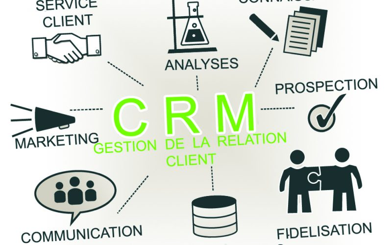
Actualmente se puede acceder al cliente de diversas formas, puede que sea por medio de un mail, una video llamada, por medio de una página web, inclusive por medio de mensajes de texto a través del móvil, y más aún por medio de las redes sociales que ha sido una de las formas más estratégicas de interacción de los clientes con la empresa.
¿Qué es inteligencia de negocio?¶
Inteligencia de negocios o BI (del inglés business intelligence)
Es el conjunto de estrategias y herramientas que permiten convertir los datos en información consolidada y ésta a su vez en conocimiento útil para la toma de decisiones acertadas, generando beneficios tangibles, intangibles y estratégicos, lo que conlleva a la obtención de ventajas competitivas para el negocio.
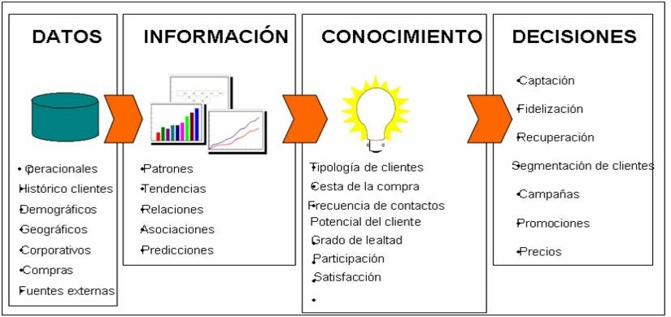
El conocimiento y su cadena de valor¶
Hay elementos que están muy correlacionados con la inteligencia de los negocios, por cuanto serían los factores claves en la consecución de lo que más adelante detallaremos como los procesos de negocio. Son estos elementos: los datos, la información y el conocimiento; los datos se transforman en información, y esta a su vez en conocimiento; y esto es BI . Por tanto:
Los datos son una colección de hechos, medidas y lista del tipo. Dentro de un contexto empresarial, el concepto de dato es definido como un registro de transacciones. Un dato no dice nada sobre el porqué de las cosas, y por sí mismo tiene poca o ninguna relevancia o propósito.
La información se puede definir como un conjunto de datos procesados y que tienen un significado (relevancia, propósito y contexto), y que por lo tanto son de utilidad para quién debe tomar decisiones, al disminuir su incertidumbre.
El conocimiento es una mezcla de experiencia, valores, información y know-how que sirve como marco para la incorporación de nuevas experiencias e información, y es útil para la toma de decisiones.
La inteligencia de negocios permite la toma de decisión en los niveles estratégicos, tácticos u operativos, extrayendo datos para analizarlos, generar reportes y realizar análisis cruzados por medio del análisis multidimensional.
Walt-Mart empresa que mide absolutamente todos los datos como el número de visitantes, el recorrido de los clientes dentro de sus tiendas y la tasa de conversión.
Toyota Motor Corporation utiliza la inteligencia de negocios para reducir costos de producción y optimizar los pedidos para enviarlos en menor tiempo.
¿Qué no es inteligencia de negocio?¶
Almacenamiento de grandes volúmenes de datos: No se debe confundir el concepto de inteligencia de negocio con el almacenamiento de grandes datos; BI es el puente para que las empresas puedan hacer útil dicha información mediante herramientas puestas al servicio de los usuarios.
BI es solo reportes: BI es más que solo reportes, es el conjunto de procesos, herramientas, estrategias y personas que permiten recolectar y trasformar los datos crudos en información lista para usar y desplegarla para la generación de conocimiento para la toma de decisiones.
BI es un problema del departamento de TI: Si bien el departamento de TI es el responsable juntar la información de las diferentes fuentes, desarrollar las soluciones, definir la plataforma tecnológica, herramientas y estructura clave a utilizar en el BI, los encargados de realizar la inteligencia de negocios son los dueños, patrocinadores y ejecutores del negocio.
Una herramienta de BI, es mi estrategia de BI: La estrategia de inteligencia de negocios de la organización se compone por la coordinación de un set de actividades: Recopilar información, Analizar la información, Competencia, Gobierno.
La solución BI se implementa de una sola vez: El negocio siempre esta evolucionando, por tanto, los datos, la información, los análisis, reportes utilizados en la toma de decisiones no son estáticos.
No es una actividad de una sola vez.
Es un proceso de mejoramiento continuo.

Beneficios de implementar BI¶
Uno de los objetivos básicos de los sistemas de información es que nos ayuden a la toma de decisiones. Cuando un responsable tiene que tomar una decisión pide o busca información, que le servirá para reducir la incertidumbre. Sin embargo, aunque todos la utilicen, no todos los responsables recogen la misma información: depende de muchos factores, como pueden ser su experiencia, formación, disponibilidad, etc. Del mismo modo, los responsables pueden necesitar recoger más o menos información dependiendo que su mayor o menor aversión al riesgo.
Como hemos visto, Business Intelligence nos servirá como ayuda para la toma de decisiones y, posteriormente, para descubrir cosas que hasta ahora desconocíamos.
Los beneficios que se pueden obtener a través del uso de BI pueden ser de distintos tipos:
Beneficios tangibles: reducción de costes, generación de ingresos, reducción de tiempos para las distintas actividades del negocio.
Beneficios intangibles: el hecho de que tengamos disponible la información para la toma de decisiones hará que más usuarios utilicen dicha información para tomar decisiones y mejorar la nuestra posición competitiva.
Beneficios estratégicos: Todos aquellos que nos facilitan la formulación de la estrategia, es decir, a qué clientes, mercados o con qué productos dirigirnos.
Niveles de información en una organización¶
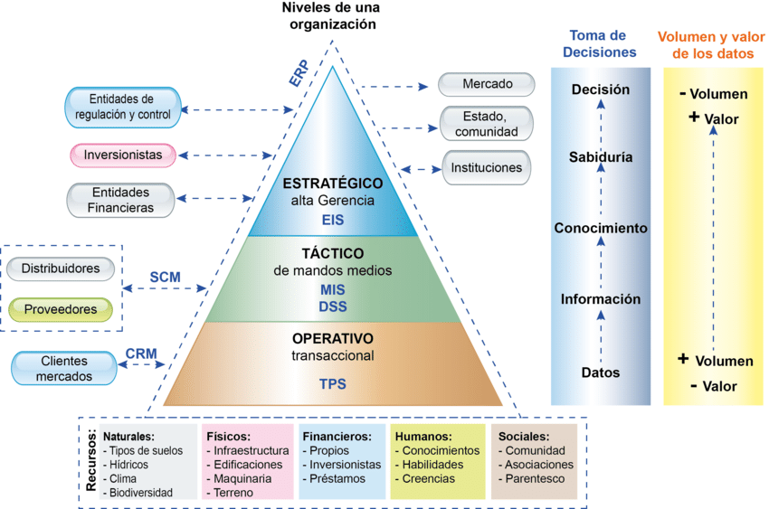
En una organización, los tipos de sistemas de información se distribuyen en tres niveles:
Nivel Operativo: En este nivel se ubican los sistemas de información que gestionan las transacciones diarias de una organización y son los generadores de “datos crudos” o en bruto. Las tareas, recursos y metas están predefinidos y bien estructurados. Los Sistemas de Procesamiento Transaccional (TPS) se encargan del control de recursos y procesos, por ejemplo: producción, compras, ventas, inventarios, etc.
Nivel Táctico: En el nivel táctico se ubican sistemas de información de mandos medios como son los Sistemas de Soporte de Decisiones (DSS) y los Sistema de Información Gerencial (MIS). Los usuarios de este nivel planifican, dirigen y controlan las acciones del nivel operativo, toman decisiones a mediano plazo con afectación según su área o departamento; generan reportes con “información” consolidada a partir de los datos crudos de acuerdo a su ámbito de acción, para mantener informados a los ejecutivos de mandos estratégicos. Por ejemplo, decisiones acerca de que líneas de productos lanzar o retirar del portafolio, o que tipo de inversión requieren, son realizadas por los sistemas de información.
Nivel Estratégico: En este nivel se encuentra los Sistemas de Información para Ejecutivos (EIS) que apoyan a la alta gerencia en la toma de decisiones a largo plazo y que afectan a toda la organización. La junta de accionistas, el gerente general o propietario, aprovechan la información de los niveles inferiores para su “conocimiento” y en base a su experiencia o “sabiduría”, son capaces de tomar la “decisión” más acertada. Por ejemplo, la dirección de una cadena de tiendas decide instalar estaciones con pantallas digitales en todas sus sucursales con vínculos en su sitio Web de comercio electrónico para las compras en línea. Esto podría atraer nuevos clientes, creando lealtad de os mismos debido a la comodidad de ir a las tiendas y comprar mercancía suministrada por los sistemas de información. Por eso los sistemas de información pueden ayudar a proveer productos y servicios que dan a un negocio una ventaja competitiva sobre sus competidores. (O’Brien, 2006, p. 8).
Sistemas de información¶
Una definición general de sistema de información es: “El Sistema de Información de una Organización es aquella parte de toda organización que formalmente se dedica a capturar, almacenar y transmitir información relevante y pertinente para la Organización a todos los miembros de la Organización, para que puedan realizar las actividades encomendadas, así como también intercambiar información de interés para la misma Organización con otras personas u organizaciones.”
Los procesos de negocios o sistemas de información, se dividen en dos tipos: los procesos transaccionales y los procesos estratégicos.
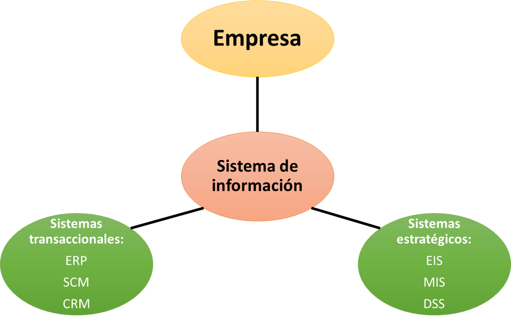
Los procesos transaccionales son aquellos que se encargan de recolectar, almacenar, procesar, calcular, ordenar, modificar y recuperar los datos obtenidos de las transacciones diarias de una empresa. Por ejemplo; la parte contable de una empresa, el cual almacena y trata la información financiera, las ventas, la nómina, etc.
Ahora, los procesos estratégicos son los que se encargan de gestionar la información de forma más sumarizada y analizada, con la finalidad de interpretar y decidir a partir de los resultados obtenidos de las diversas operaciones claves de la empresa como las ventas, el gasto, los impuestos, etc.
Sistemas de procesos transaccionales (TPS)¶
Enterprise Resource Planning (ERP)
El sistema de Planificación de Recursos Empresariales, es un sistema integral, que gestionan recursos de toda la empresa como por ejemplo: recursos (naturales) para la producción, inventario de bienes y productos (físicos), logística, distribución, compras a proveedores y ventas a clientes (mercados), contable-financiero, recursos humanos y sociales. Los ERP se relacionan con otros sistemas como los CRM, SCM y MIS, DSS y EIS; estos sistemas pueden ser desarrollados a medida como sistemas independientes o como módulos de un ERP.
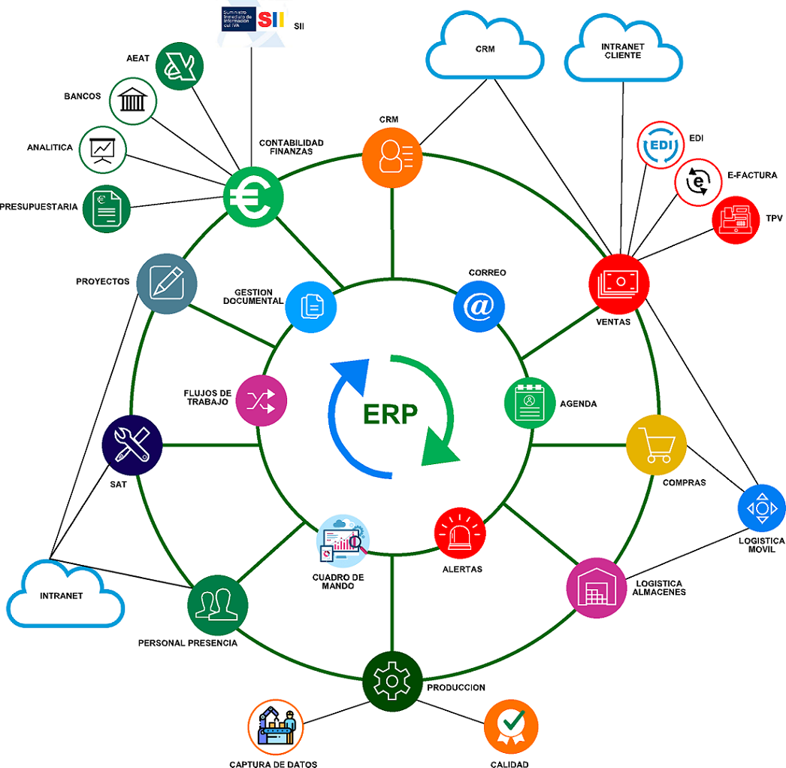
Beneficios del ERP
No solo apoyan y optimizan los recursos de una empresa, sino comparten la información con empresas vinculadas.
Los nuevos ERP amplían sus funciones, incluso aquellas más específicas de industria individuales.
Tecnologías se basan en protocolos de comunicación de internet
Un ERP ofrece mejores prácticas a la industria, así la empresa estará a niveles equivalentes a la competencia.
Al tener todos los sistemas de los diferentes departamentos integrados se logra una visión global de la operación de la empresa.
Los procesos de la cadena de suministro y producción, al estar automatizados, harán que la empresa tenga flexibilidad y agilidad en su operación y mejoran sus niveles de inventario.
Los procesos de atención al cliente mejoraran debido a la posibilidad de tener información relevante de los eventos que vinculan al cliente con la empresa.
Customer Relationship Management (CRM)
El Sistema de Gestión de la Relación con los Consumidores, se enfoca en servicios y estrategias de marketing para lograr la fidelización de los clientes que ya son parte de la empresa, así como para captar nuevos clientes. Permite llevar un control de reuniones, el registro del historial de acuerdos en procesos de negociación, contratos, convenios, etc. Por ejemplo las empresas inmobiliarias manejan este tipo de sistemas.
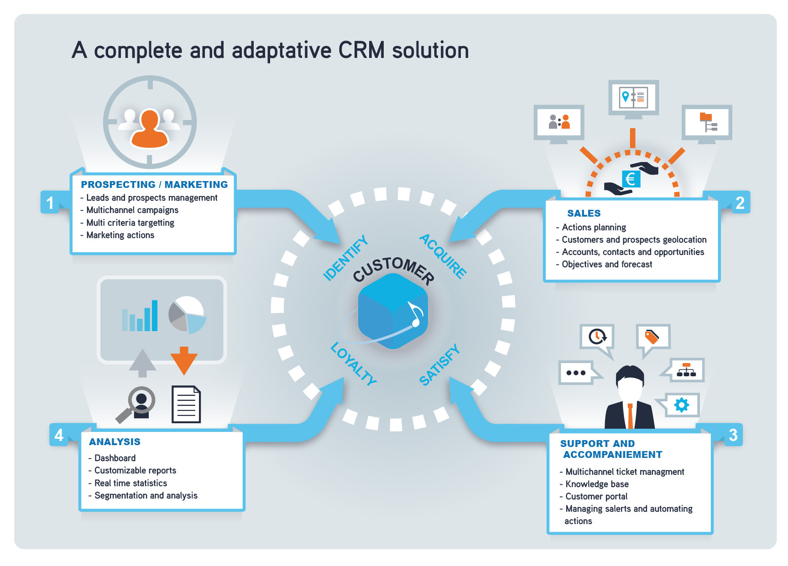
Beneficios del CRM
Mayor conocimiento del cliente, en el aumento de la satisfacción y lealtad de los mismos, aumento de las ventas, y reducción de costes del servicio (Ayuso & Rodríguez, A, 2011).
La mejora del servicio a clientes actuales, captación de nuevos clientes, y ayudar en la gestión de los departamentos de ventas, marketing y servicios (Sieber, Valor, & Porta, 2006, p. 98).
Supply Chain Management (SCM)
El sistema de Gestión de la Cadena de Suministros, involucra a toda la logística que va desde el contacto con proveedores que suministran la materia prima necesaria para la producción de nuevos artículos; y, la organización de la cadena de distribuidores y vendedores para llegar al cliente o consumidor final. Existen otros tipos de sistemas de información que contribuyen en las actividades de una organización, por ejemplo: los sistemas de ofimática, de mensajería o comunicación, de gestión documental, sistemas de comercio electrónico, de trabajo colaborativo o en grupo, etc.
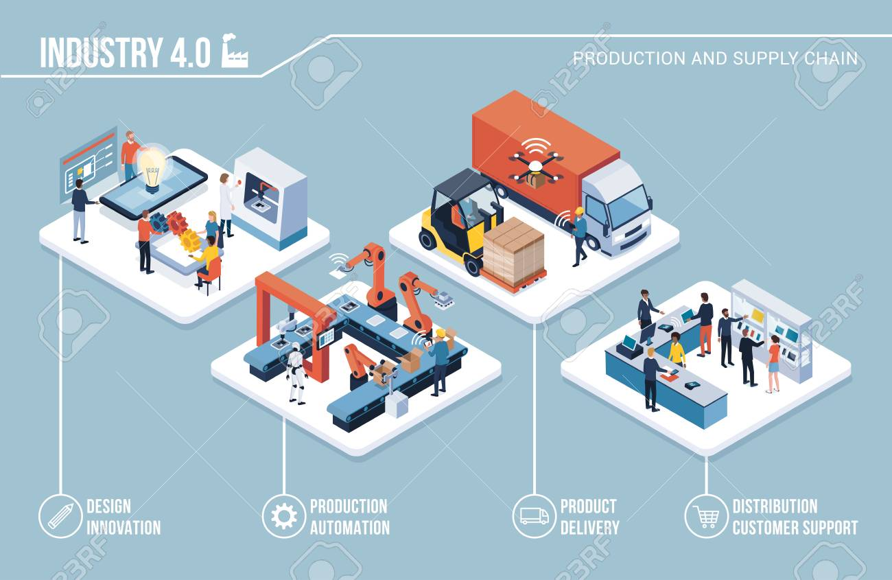
Beneficios del SCM
Reducción del stock.
Una reducción en costos asociados; en cuanto más ajustado estén los niveles de inventario menor será su coste de mantenimiento (Lambert & Cooper, 2000).
Un horizonte temporal de largo plazo: se asientan lazos de confianza entre los miembros de la cadena de suministro, como su coordinación y contratos menos detallados (Cavinato, 1991).
Una disminución del tiempo del ciclo del producto; se reduce significativamente gracias a los esfuerzos en el buen manejo de las operaciones logísticas y prácticas en el control del stock (Cooper & Ellram, 1993).
Sistemas de procesos estratégicos (SPS)¶
Management Information System (MIS)
El sistema de Información Gerencial comprende una colección de sistemas de información, que relacionados entre sí, apoyan las actividades de una organización en todos sus niveles. Las funciones principales de estos sistemas son la planeación, organización, dirección y control de las actividades del nivel operativo, apoyo a las decisiones de nivel táctico y a su vez, informar los avances y resultados de actividades, al nivel estratégico.
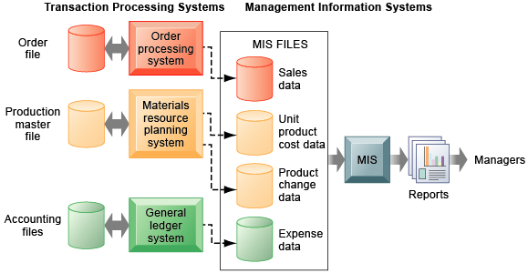
Decision Support System (DSS)
El sistema de Soporte de Decisiones, genera información a partir de los datos que provee el TPS y apoya las decisiones semiestructuradas de los usuarios de mandos medios y estratégicos. Los DSS presentan información estadística, dinámica, multidimensional y consolidada acorde a los Indicadores Clave de Rendimiento (KPI’s) de cada área de la organización, que regularmente se estructura en cubos OLAP (On-Line Analytical Processing).
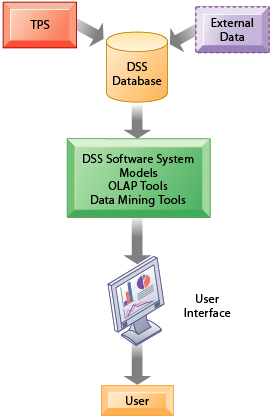
Executive Information System (EIS)
El sistema de Información Ejecutiva, está orientado a los usuarios de alta gerencia, tiene la función de presentar de forma sencilla, el estado actual de los KPI’s relevantes de la organización, basándose en otros sistemas como los DSS, cubos OLAP y varias fuentes de datos empresariales. La interfaz típica de estos sistemas son los cuadros de mando o tableros de control (dashboards) que presentan información estadística dinámica descriptiva, diagnóstica o predictiva.
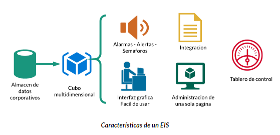
La inteligencia de negocios en las empresas¶
La inteligencia del negocio como ya se sabe es el eje integrador de la información en la empresa, por tanto, son las propias áreas ésta el foco de acción de la BI. A continuación se presenta un ejemplo de aplicación por departamento:
Compras: usando datos del SCM, la inteligencia de negocios permite acceder a los datos del mercado de proveedores, recopilando la información necesaria para determinar la relación entre costo de abastecimiento y el margen de ganancia de los productos. Al mismo tiempo, permite monitorear la información de consumos de cada cadena de producción, lo que permite optimizar el volumen de las compras.
Ventas: usando datos del CRM, se facilita la comprensión de las necesidades del cliente, así como responder a las nuevas oportunidades del mercado. También son posibles análisis de patrones de compra para realizar ventas cruzadas de productos asociados.
Marketing: usando datos del CRM o de las redes sociales, su puede identificar de forma más precisa los segmentos de clientes y estudiar con mayor detalle su comportamiento. Para ello se pueden incluir análisis capaces de medir, por ejemplo, el impacto de los precios y las promociones.
Finanzas: usando datos del ERP, se puede analizar los datos de forma inmediata y en tiempo real, mejorando así ciertas operaciones que suele incluir presupuestos, proyecciones, control de gestión, tesorería, balances y estados de resultados.
Recursos humanos: obteniendo información de HCM y otras fuentes adecuadas, se puede analizar los parámetros de satisfacción de los empleados, absentismo laboral, horas extras y otros.
Algunos ejemplos de preguntas de BI:¶
¿Cómo comparar las ventas totales del 2015 con las del ano 2014? Y Por producto?
¿Cuál es mi producto mas rentable, mi canal mas rentable? El tipo de cliente mas rentable?
¿Cuánto gastaron nuestros clientes mayores de 35 anos en el ultimo trimestre?
¿Cuál es la frecuencia de compra de nuestros clientes por segmento?
¿Cuál es la facturación promedio por local?
¿Cómo son los clientes que estoy perdiendo? Cuantos son?
Una solución de Inteligencia de Negocios completa permite:¶
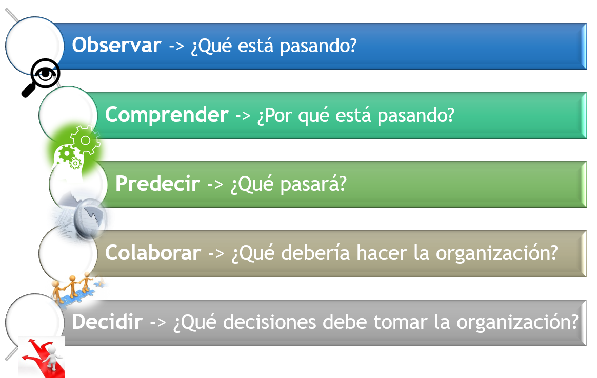
Actividad¶
Bibliografía¶
Joyanes Aguilar, L. (2019). Gestión del conocimiento y aprendizaje. Inteligencia de Negocios y Análitica de Datos: Una Visión Global de Business Intelligence & Analytics, 1–30.
Mazon-Olivo, B., Pan, A., & Tinoco-Egas, R. (2018). Capítulo 7: Inteligencia de negocios en el sector agropecuario. Análisis de Datos Agropecuarios.Disponible
Muñoz-Hernández, H., Osorio-Mass, R. C., & Zúñiga-Pérez, L. M. (2016). Inteligencia de los negocios. Clave del Éxito en la era de la información. Clío América, 10(20), 194.Disponible